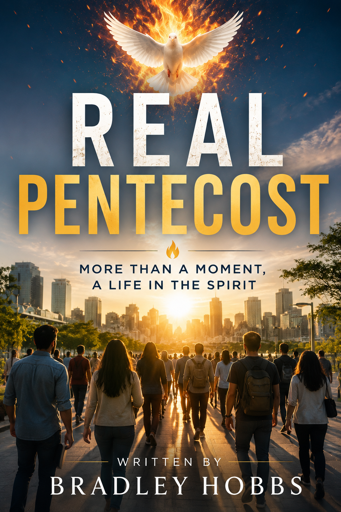

Prologue
Before there was an upper room, there was a promise. Journey from ancient prophecy to the threshold of Pentecost.
Continue →
Pentecost was never intended to remain a historical event remembered only through tradition. The promise poured out in Jerusalem became the beginning of a people transformed by repentance, the saving name of Jesus Christ, the gift of the Holy Ghost, steadfast devotion to the apostles' doctrine, fellowship, prayer, holiness, and faithful witness.
Real Pentecost follows that biblical story from promise to fulfillment, inviting readers to rediscover the continuing life of Jesus Christ revealed throughout Scripture. Rather than presenting Pentecost as a single extraordinary moment, these pages explore the enduring pattern that shaped the early church and continues to call believers into a life centered on Jesus.
Every chapter encourages a thoughtful return to the Word of God, allowing Scripture to speak with clarity, simplicity, and enduring authority.
"And they continued steadfastly in the apostles' doctrine and fellowship, and in breaking of bread, and in prayers."
Every page builds upon the biblical story, inviting readers to rediscover Pentecost from promise to fulfillment and into a continuing life in the Spirit.
Before there was an upper room, there was a promise. Journey from ancient prophecy to the threshold of Pentecost.
Continue →A personal invitation to return to Scripture and rediscover the enduring beauty of biblical Pentecost.
Continue →The upper room was never the destination. Discover why Pentecost became the beginning of a continuing life in Jesus Christ.
Continue →Every generation deserves the opportunity to return to Scripture and rediscover the beauty of the apostolic pattern centered upon Jesus Christ.
My prayer throughout every chapter has been simple: that readers would move beyond tradition, assumptions, and familiar language to encounter the living testimony of God's Word with fresh eyes and renewed faith.
Pentecost was never meant to become a memory preserved in history. The same Jesus who poured out His Spirit continues to transform ordinary lives through repentance, baptism in His name, the gift of the Holy Ghost, and steadfast devotion to the apostles' doctrine.
May these pages encourage a deeper love for Scripture and a greater desire to walk daily in the continuing life of the Spirit.
Bradley Hobbs
Continue exploring Scripture, read the chapters, or discover additional biblical resources.
Read the complete study and follow the biblical pattern from beginning to end.
Continue →Explore articles, devotionals, Scripture studies, and additional teaching materials.
Continue →Learn more about Bradley Hobbs and the vision behind Real Pentecost.
Continue →